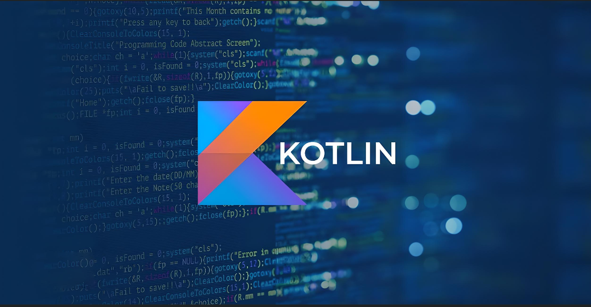

História do Kotlin
Kotlin é uma linguagem de programação moderna, estática, tipada estaticamente que roda na máquina virtual Java (JVM), bem como na compilação para JavaScript. Ela foi inicialmente desenvolvida pela JetBrains em 2011, mas foi aberta para o público em geral em 2016. Kotlin se destaca por ser concisa, expressiva e segura, trazendo melhorias significativas em relação ao desenvolvimento de aplicativos Android, entre outras aplicações.
Origens e Evolução
O desenvolvimento inicial do Kotlin começou na JetBrains, uma empresa conhecida por suas ferramentas de desenvolvimento como IntelliJ IDEA, ReSharper e PyCharm. A motivação por trás da criação do Kotlin foi resolver as limitações percebidas no desenvolvimento com Java, como verbosidade excessiva, falta de suporte a recursos modernos e erros comuns de programação.
Em julho de 2011, a JetBrains anunciou publicamente o Kotlin, apresentando-o como uma linguagem que poderia coexistir com o Java em projetos existentes, graças à sua interoperabilidade perfeita com código Java.
Adoção e Popularidade
Em fevereiro de 2016, a JetBrains tornou o Kotlin open source sob a licença Apache 2.0, o que levou a um aumento significativo na adoção da linguagem. Uma das principais razões para a rápida adoção do Kotlin foi sua integração oficial com o Android Studio pelo Google em maio de 2017, tornando-o uma linguagem preferida para o desenvolvimento de aplicativos Android.
Kotlin oferece várias vantagens sobre Java, incluindo um sistema de tipos mais seguro, suporte nativo a funções lambda, inferência de tipos, suporte a programação funcional e extensões de funções, o que resulta em um código mais conciso e legível.
Expansão Além do Android
Além do desenvolvimento Android, Kotlin encontrou aplicações em outras áreas, incluindo desenvolvimento de servidores com frameworks como o Spring, desenvolvimento de aplicações desktop com frameworks como o TornadoFX e até mesmo desenvolvimento web com o framework Kotlin/JS.
A JetBrains continua a evoluir o Kotlin, lançando novas versões regularmente para melhorar a linguagem, corrigir bugs e adicionar novos recursos. A comunidade Kotlin também é ativa, contribuindo com bibliotecas e ferramentas que expandem ainda mais o ecossistema Kotlin.
Futuro do Kotlin
O futuro do Kotlin parece promissor, com um crescimento contínuo esperado no desenvolvimento Android e expansão em outras áreas, como IoT, desenvolvimento de microserviços e mais.
A JetBrains e a comunidade Kotlin estão comprometidas em tornar a linguagem ainda mais poderosa, mantendo sua compatibilidade com Java e melhorando a experiência do desenvolvedor em geral.